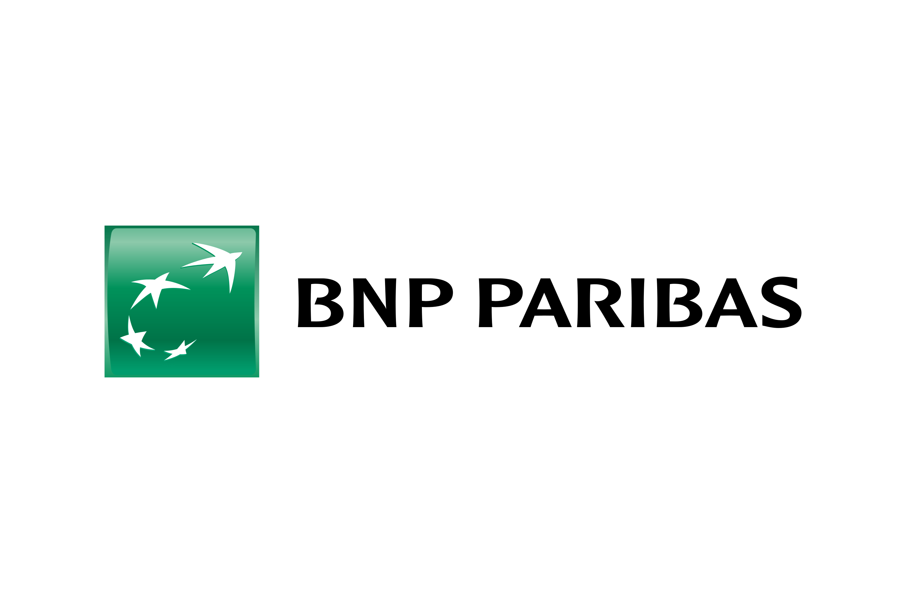
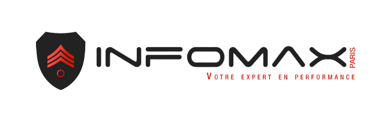
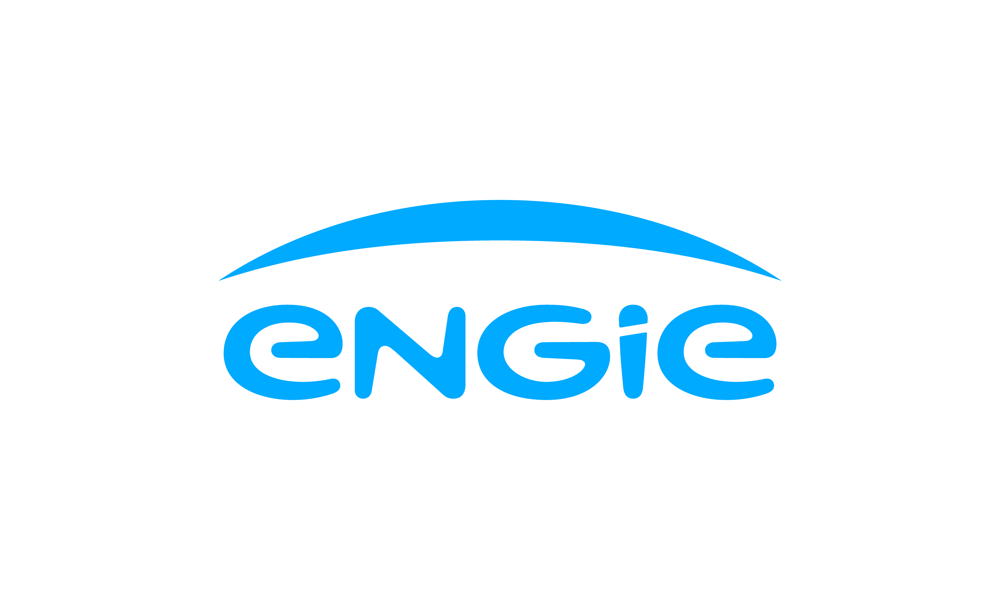

Expériences

Pressed Flowers by Nell
Stage de Terminale Irlande, 2 Février - 20 Février 2026
Marketing Digital Créations et publications de contenus , gestions des réseaux sociaux Mise en avant de produits/services Stratégie de visibilité

BNP Paribas
Stage de Terminale Montreuil, 29 Sept. - 17 Oct. 2025Pôle IT - Cybersécurité & Infrastructures
Découverte du rôle PO/Tech Lead → participation aux réunions d’équipe. Sensibilisation à la sécurité informatique : authentification, gestion des accès, IAM →réseau et sécurisation cloud Participation à la détection et prévention des risques cyber phishing, usurpation d’identité, fraude, protection des données
BNP Paribas
Stage de Première Montreuil, 29 Sept. - 17 Oct. 2025Pôle IT - Infrastructure IT
Observation de la gestion des environnements Cloud Compréhension des modèles IaaS / PaaS / SaaS Sensibilisation à la sécurité des infrastructures Découverte des enjeux liés à la protection des données HTML : Copie du site BNP Formations liées a la cybersécurité

Infomax Paris
Stage de Première Paris, Nov. 2024 - Déc.2024Maintenance & Support Informatique
Montage et préparation de postes informatique Installation et configuration de systèmes Assistance technique auprès des utilisateurs Diagnostic et résolution de problèmes matériel Sensibilisation à la sécurité des équipements

Engie
2 Stages de seconde Paris, Janv - Janv. 2024 et Juin- Juillet. 2024Environnement technique & infrastructure
Observation de la gestion des installations techniques Sensibilisation aux normes de sécurité Gestion de la régie son et lumière Plomberie et gestion du bon fonctionnement